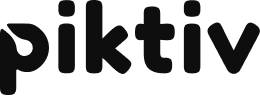
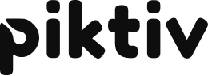

Sign up!
Because we are a small, non-profit, organization we must enforce a strict no cancellation policy. No return on tickets to the event. Program subject to change at any time.
24
Because we are a small, non-profit, organization we must enforce a strict no cancellation policy. No return on tickets to the event. Program subject to change at any time.
This will of course most easily relate to the digital industry, but we hope to broaden the focus to other areas. We want our speakers and attendees to share tools across our fields, both for improving your own flow but also for understanding other area of expertise in the product process.
We want to invite not only developers but, project managers, marketing professionals, sales people, and many others. Anyone with passion about their products!
This talk invites you to explore the possibilities beyond the rigid and predefined frameworks. Discover how using axioms, principles, and guidelines can guide you to develop an Agile framework that fits with the unique dynamics of your organization. While Agile frameworks offer a foundational 'safety net' with well-defined rules, processes, and established roles to mitigate organizational design pitfalls, the challenge lies in navigating the number of options to find the perfect match. Yes, the better frameworks leave a lot of room to fill in the details and tailor it to your situation. But then the questions is: How to fill in the details? In this session, we will guide you through the journey of abandoning the one-size-fits-all approach. By focusing on your specific context and employing a set of foundational axioms, principles, and guidelines, you can evolve a framework that not only addresses your unique challenges but also enhances your team's agility and effectiveness.
Guiding large and small scale Agile adoptions worldwide at different customers like Raiffeisenbank, Textkernel, ING, NN, Powerhouse, PANalytical, Thales, Adwise, Barco, Powerhouse, Reasult, Independer, de Amersfoortse, ASR, and Achmea. (co)author of the books: 'Creating Agile Organizations', ‘EMERGENT – Lean & Agile adoption for an innovative workplace’ and 'A Scrum Book'.
One of the biggest problems with product development is that a great deal of what is built does not reach the intended impact. The most obvious reason for this is that one rarely focuses on building a product / service that meets the business goals, benefits from the technology AND provides a desired user experience at the same time. Let’s take a look at a possible approach to solve this called Continuous Collaborative Discovery & Delivery, or just Holistic Product Discovery for short.
Martin Christensen is a transformational coach based in Stockholm, Sweden. He is coaching and mentoring individuals, teams and organisations in Product Discovery and Delivery to help increase effectiveness of the products and motivation of the people, by taking a holistic approach. He’s been preaching Agile since around the conception of the manifesto, but his current love is in the domain of Adult Development Theory at houseofevolution.se.
How do you get to the elusive agile mindset and avoid fake agile? The lean community has brought forward Toyota Kata to address similar challenges within Lean. In this session you'll be introduced to Toyota Kata and ideas for using Kata for Agile.
Amanda Colliander has worked as a leader within agile software development for many years and today works at Jeppesen a Boeing Company. She started using Lean Kata 8 years ago and has used it for improvements as well as coaching and 2nd coaching others during the years. She has spent the last years exploring how to use Kata for Agile and shared ideas both within the Agile and the Lean community.
The legacy of the original lightweight and barely sufficient Agile ideas (XP and Scrum) has been impeded by the difficulties of applying them beyond a single team without losing the key principles and the promised gains.
Over the last decade, that challenge has led to a rise in heavy- weight methods, especially SAFe™, which has become a go-to place for "everything agile". It provides the user with a profound variety of specific tools and techniques for "scaling agile”.
Org Topologies™ is a framework-agnostic approach that builds upon whatever you already have implemented. It will allow you to further develop your Agile ecosystems witha vector toward an org design where business and technology work as one to create true business agility.
Attendees will learn to the language of Org Topologies™. They will acquire clarity on which organization ecosystem they want to build and which behaviors they expect it to exhibit.
Roland Flemm (PST) became a Scrum Master in 2009 closing his 20-year career as a developer and infrastructure specialist. Roland grew into international agile consulting with a focus on large scaled Scrum adoptions since 2015. He has been actively appearing in the Agile community as a conference speaker.
Roland Flemm is the creator of the Koos Coach agile comic series and created the "Elements of Scrum" Scrumcards a Scrum learning tool.
In addition to our usual conference we offer optional add-ons of intimate and interactive workshops with our keynote speakers.
Please Note: The workshops and the conference are held in different locations!
Workshops on Wednesday. Presentations, Open Space and evening mingle on Thursday.
A detailed programme will be published as soon as workshops have been finalized.
Because we are a small, non-profit, organization we must enforce a strict no cancellation policy. No return on tickets to the event. Program subject to change at any time.

If you are interested in being a sponsor, mail: brewingagile@scrumbeers.com


 
